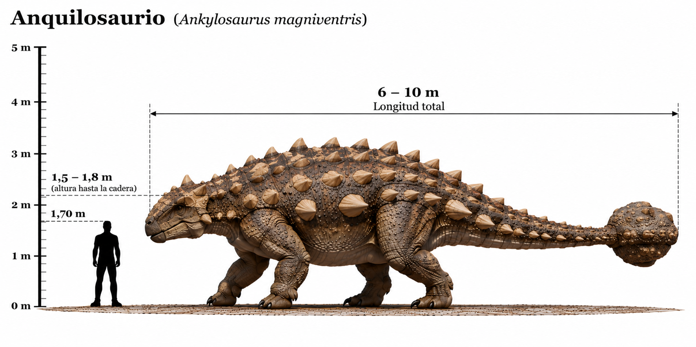

Ankylosaurus magniventris

El Ankylosaurus magniventris fue uno de los dinosaurios acorazados más grandes conocidos. Habitó América del Norte durante el Cretácico tardío, hace aproximadamente entre 68 y 66 millones de años. Era un dinosaurio herbívoro de cuerpo ancho y robusto, que caminaba sobre cuatro patas. Su principal característica era la armadura de placas óseas, llamadas osteodermos, que protegía gran parte de su cuerpo. También poseía una poderosa maza ósea en el extremo de la cola, que probablemente utilizaba como mecanismo de defensa frente a grandes depredadores como Tyrannosaurus rex. Su cabeza era ancha y relativamente baja, y tenía un pico adaptado para alimentarse de vegetación.
- Grupo: Anquilosaurio.
- Familia: Ankylosauridae (anquilosáuridos).
- Período: Cretácico tardío (hace aproximadamente 68–66 millones de años).
- Alimentación: Herbívoro.
- Longitud: Aproximadamente 6–8 metros.
- Altura: Aproximadamente 1,5–1,7 metros hasta la cadera.
- Localización: América del Norte.
